Audit Intelligence Engine ·
aktif
Internal Audit · Continuous Auditing
Pattern Recognition
in Internal Audit
Menemukan pola,
mengungkap risiko
, mencegah fraud lebih dini.
Rule-Based Detection
Benford's Law
Robust Z-Score
Relationship Analytics
Risk Scoring
Memuat…
Analisis
Ringkasan
Temuan
Benford's Law
Relasi & Perilaku
Pengaturan
Sumber Data
Mesin Deteksi
Arsitektur & Panduan